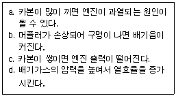

지게차운전기능사 (2009-03-29 기출문제)
1. 보기에서 머플러(소음기)와 관련된 설명이 모두 올바르게 조합된 것은?

- a, b, d
- b, c, d
- a, c, d
- a, b, c
(정답률: 78%)

2. 디젤엔진 과열 원인이 아닌 것은?
- 경유에 공기가 혼입되어 있을 때
- 라디에이터 코어가 막혔을 때
- 물 펌프의 벨트가 느슨해졌을 때
- 정온기가 닫힌 채 고장이 났을 때
(정답률: 58%)
3. 건설기계장비 작업시 계기판에서 냉각수 경고등이 점등되었을 때 운전자로서 가장 적합한 조치는?
- 오일량을 점검한다.
- 작업이 모두 끝나면 곧 바로 냉각수를 보충한다.
- 작업을 중지하고 점검 및 정비를 받는다.
- 라디에이터를 교환한다.
(정답률: 79%)
4. 기관 과급기에서 공기의 속도 에너지를 압력에너지로 변환시키는 것은?
- 터빈(turbine)
- 디퓨저(diffuser)
- 압축기
- 배기관
(정답률: 50%)
5. 운전 중 배터리 충전 표시등이 점등되면 무엇을 점검하여야 하는가? (단. 정상인 경우 작동 중에는 점등 되지 않는 형식임)
- 에어클리너 점검
- 엔진오일 점검
- 연료수준 표시등 점검
- 충전계통 점검
(정답률: 88%)
6. 디젤기관에서 노킹을 일으키는 원인으로 맞는 것은?
- 흡입공기의 온도가 높을 때
- 착화지연 기간이 짧을 때
- 연료에 공기가 혼입되었을 때
- 연소실에 누적된 연료가 많아 일시에 연소 할 때
(정답률: 55%)
7. 디젤기관에서 연료장치의 구성 요소가 아닌 것은?
- 분사 노즐
- 연료필터
- 분사펌프
- 예열플러그
(정답률: 75%)
8. 기관에서 연료를 압축하여 분사순서에 맞추어 노즐로 압송시키는 장치는?
- 연료분사펌프
- 연료 공급펌프
- 프라이밍 펌프
- 유압 펌프
(정답률: 57%)
9. 다음 중 윤활유의 기능으로 모두 맞는 것은?
- 마찰감소, 스러스트작용, 밀봉작용, 냉각작용
- 마멸방지, 수분흡수, 밀봉작용, 마찰증대
- 마찰감소, 마멸방지, 밀봉작용, 냉각작용
- 마찰증대, 냉각작용, 스러스트작용, 응력분산
(정답률: 77%)
10. 기관 운전 중에 진동이 심해질 경우 점검해야 할 사항과 관련이 없는 것은?
- 타이밍 라이트로 기관 타이밍이 정확한지 점검한다.
- 기관과 차체 연결 마운틴 레버를 점검해본다.
- 라디에이터에서 누수가 없는지 점검해본다.
- 연료계통에 공기가 들어 있는지 점검한다.
(정답률: 51%)
11. 크랭크 케이스를 환기하는 목적으로 가장 적합한 것은?
- 크랭크 케이스의 청소를 쉽게 하기 위하여
- 출력의 손실을 막기 위하여
- 오일의 증발을 막으려고
- 오일의 슬러지 형성을 막으려고
(정답률: 63%)
12. 유압펌프에서 펌프량이 적거나 유압이 낮은 원인이 아닌 것은?
- 오일탱크에 오일이 너무 많을 때
- 펌프 흡입라인 막힘이 있을 때(여과망)
- 기어와 펌프 내벽 사이 간격이 클 때
- 기어 옆부분과 펌프 내벽 사이 간격이 클 때
(정답률: 71%)
13. 도체에 전기기 흐른다는 것은 전자의 움직임을 뜻한다. 다음 중 전자의 움직임을 방해하는 요소는 무엇인가?
- 전압
- 저항
- 전력
- 전류
(정답률: 84%)
14. 축전기 전해액이 자연 감소되었을 때 보충에 가장 적합한 것은?
- 증류수
- 황산
- 경수
- 수도물
(정답률: 81%)
15. 자동차AC발전기(Alternating Current Generator)의 다이오드가 하는 역할은?
- 전류를 조정하고 교류를 정류한다.
- 전압을 조정하고 교류를 정류한다.
- 교류를 정류하고 역류를 방지한다.
- 여자전류를 조정하고 역류를 방지한다.
(정답률: 56%)
16. 기동전동기의 전기자 코일을 시험하는데 사용되는 시험기는?
- 전류계 시험기
- 전압계 시험기
- 그로울러 시험기
- 저항 시험기
(정답률: 39%)
17. 건설기계 기관에서 축전지를 사용하는 주된 목적은?
- 기동전동기의 작동
- 연료펌프의 작동
- 워터펌프의 작동
- 오일펌프의 작동
(정답률: 74%)
18. 전기회로에서 퓨즈의 설치 방법은?
- 직렬
- 병렬
- 직, 병렬
- 상관없다.
(정답률: 60%)
19. 토크컨버터의 구성품이 아닌 것은?
- 펌프
- 터빈
- 스테이터
- 플라이휠
(정답률: 61%)
20. 수동변속기가 장착된 건설기계장비에서 클러치가 연결된 상태에서 기어변속을 하였을 때 발생할 수 있는 현상으로 맞는 것은?
- 클러치 디스크가 마멸된다.
- 변속 레버가 마모된다.
- 기어에서 소리가 나고 기어가 손상 될 수 있다.
- 종감속기어가 손상된다.
(정답률: 60%)
21. 무한궤도식 건설기계에서 리코일 스프링을 분해해야 할 경우는?
- 아이들 롤러 파손시
- 트랙 파손시
- 스프로킷 절손시
- 스프링이나 샤프트 절손시
(정답률: 51%)
22. 지게차로 짐을 싣고 경사지에서 운반을 위한 주행을 할 때 안전상 올바른 운전 방법은?
- 포크를 높이 들고 주행한다.
- 내려갈 때에는 저속 후진한다.
- 내려갈 때에는 변속 레버를 중립에 위치한다.
- 내려갈 때에는 시동을 끄고 타력으로 주행한다.
(정답률: 82%)
23. 브레이크 파이프 내에 베이퍼록이 발생하는 원인과 가장 거리가 먼 것은?
- 드럼의 과열
- 지나친 브레이크 조작
- 잔압의 저하
- 라이닝과 드럼의 간극 과대
(정답률: 41%)
24. 트랙에 잇는 롤러에 대한 설명으로 틀린 것은?
- 상부 롤러는 보통 1~2개가 설치되어 있다.
- 하부 롤러는 트랙프레임이 한쪽 아래에 3~7개 설치되어 있다.
- 상부 롤러는 스프로킷과 이이들러 사이에 트랙이 처지는 것을 방지한다.
- 하부 롤러는 트랙의 마모를 방지해 준다.
(정답률: 42%)
25. 모터그레이더는 차동장치가 없어 선회시 회전 반경이 커지는데 이 회전 반경을 작게 하기 위하여 설치한 장치를 무엇이라 하는가?
- 리닝 장치
- 롤링작업 장치
- 스케리파이어 장치
- 리프트 장치
(정답률: 45%)
26. 타이어식 건설기계장비에서 타이어 접지압을 바르게 표현한 것은?
- 접지면적(cm2) /(분에) 공차상태의 무게(kgf)
- 접지길이(cm) /(분에) 공차상태의 무게(kgf)
- 접지면적(cm2) /(분에) 작업장치의 무게
- 접지길이(cm) /(분에) 공차상태의 무게 + 예비타이어 무게
(정답률: 60%)
27. 교차로 통행방법에 대한 설명으로 가장 적절한 것은?
- 좌,우회전시에는 경보기를 사용하여 주위에 주의 신호를 한다.
- 우회전 차는 차로에 관계없이 우회전 할 수 있다.
- 좌회전 차는 미리 중앙선을 따라 서행으로 진행한다.
- 교차로 중심 바깥쪽으로 좌회전 한다.
(정답률: 58%)
28. 건설기계장비시설을 갖춘 정비사업자만이 정비할 수 있는 사항은?
- 오일의 보충
- 배터리 교환
- 유압장치의 호스 교환
- 재동등 전구의 교환
(정답률: 81%)
29. 차로가 설치된 도로에서 통행방법 중 위반이 되는 것은?
- 택시가 건설기계를 앞지르기를 하였다.
- 차로를 따라 통행하였다.
- 경찰관의 지시에 따라 중앙 좌측으로 진행하였다.
- 두 개의 차로에 걸쳐 운행하였다.
(정답률: 88%)
30. 도로 교통법상 보행자 보호에 대한 설명으로 맞는 것은?
- 모든 차의 운전자는 보행자가 횡단보도를 통행하고 있는 때에는 그 횡단보도를 통과 후 일시정지 하여 보행자의 횡단을 방해하거나 위험을 주어서는 아니 된다.
- 모든 차의 운전자는 보행자가 횡단보도를 통행하고 있을 때에는 신속히 횡단하도록 한다.
- 모든 차의 운전자는 보행자가 횡단보도를 통행하고 있는 때에는 그 횡단보도에 정지하여 보행자가 통과 후 진행 하도록 한다.
- 모든 차의 운전자는 보행자가 횡단보도를 통행하고 있는 때에는 그 횡단보도 앞에서 일시정지 하여 보행자의 횡단을 방해하거나 위험을 주어서는 아니 된다.
(정답률: 69%)
31. 건설기계장비의 제동장치에 대한 정기검사를 면제 받고자 하는 경우 첨부하여야 하는 서류는?
- 건설기계매매업 신고서
- 건설기계대여업 신고서
- 건설기계제동장치정비확인서
- 건설기계폐기업 신고서
(정답률: 84%)
32. 건설기계의 조종 중 과실로 7명 이상에게 중상을 입힌 때 면허처분기준은?
- 면허 취소
- 면허효력정지 30일
- 면허 효력정지 60일
- 면허효력정지 90일
(정답률: 65%)
33. 도로 교통법상 도로의 모퉁이로부터 몇 m이내의 장소에 정차하여서는 안 되는가?
- 2m
- 3m
- 5m
- 10m
(정답률: 68%)
34. 보행자가 도로를 횡단할 수 있도록 안전표시한 도로의 부분은?
- 교차로
- 횡단보도
- 안전지대
- 규제표시
(정답률: 85%)
35. 건설기계의 구조 또는 장치를 변경하는 사항으로 적합하지 않은 것은?
- 관할 시, 도지사에게 구조변경 승인을 받아야 한다.
- 건설기계정비업소에서 구조 또는 장치의 변경작업을 한다.
- 구조변경검사를 받아야한다.
- 구조변경검사는 주요구조를 변경 또는 개조한날부터 20일 이내에 신청하여야한다.
(정답률: 33%)
36. 건설기계 소유자는 건설기계 등록사항에 변경이 있을 때(전시사변 기타 이에 준하는 비상사태하의 경우는 제외)에는 등록사항의 변경신고를 변경이 있는 날부터 며칠 이내에 하는가?
- 10일
- 15일
- 20일
- 30일
(정답률: 39%)
37. 일반적으로 유압계통을 수리할 때마다 항상 교환해야 하는 것은?
- 샤프트 실(shaft seals)
- 커플링(couplings)
- 밸브 스풀(valve spools)
- 터미널 피팅(terminal fittings)
(정답률: 60%)
38. 유압으로 작동되는 작업장치에서 작업 중 힘이 떨어지는 원인으로 가장 관계가 있는 것은?
- 메인 릴리프 밸브
- 첵(Check) 밸브
- 방향 전환 밸브
- 메이크업 밸브
(정답률: 61%)
39. 유압회로의 설명으로 맞는 것은?
- 유압 회로에서 릴리프 밸브는 압력제어 밸브이다.
- 유압회로의 동력 발생부에는 공기와 믹서 하는 장치가 설치되어 있다
- 유압 회로에서 릴리프 밸브는 닫혀 있으며, 규정압력이하의 오일압력이 오일탱크로 회송된다.
- 회로 내 압력이 규정 이상일 때는 공기를 혼입하여 압력을 조절한다.
(정답률: 54%)
40. 유압회로에서 역류를 방지하고 회로 내의 잔류압력을 유지하는 밸브는?
- 첵 밸브
- 셔틀 밸브
- 매뉴얼 밸브
- 스로틀 밸브
(정답률: 65%)
41. 유압 모터의 회전속도가 규정 속도보다 느릴 경우의 원인에 해당하지 않는 것은?
- 유압펌프의 오일 토출량 과다
- 유압유의 유입량 부족
- 각 습동부의 마모 또는 파손
- 오일의 내부누설
(정답률: 66%)
42. 유압 실린더에서 피스톤 속도를 빠르게 하기 위한 가장 적절한 제어방법은?
- 압력을 높게 한다.
- 유량을 증가 시킨다.
- 고점도 유압유를 사용한다.
- 카운터 밸런스 밸브를 설치한다.
(정답률: 44%)
43. 압력제어 밸브의 종류가 아닌 것은?
- 릴리프 밸브
- 감압 밸브
- 시퀸스 밸브
- 스로틀 밸브
(정답률: 54%)
44. 유압펌프에서 회전수가 같을 때 토출량이 변하는 펌프는?
- 기어펌프
- 정용량 베인펌프
- 프포펠러펌프
- 가변 용량형 피스톤 펌프
(정답률: 63%)
45. 작동유(유압유) 속에 용해 공기가 기포로 발생하여 소음과 진동이 발생되는 현상은?
- 인화 현상
- 노킹 현상
- 조기착화 현상
- 캐비테이션 현상
(정답률: 57%)
46. 유압회로 내에 기포가 발생하면 일어나는 현상과 관련 없는 것은?
- 작동유의 누설저하
- 소음증가
- 공동현상
- 오일 탱크의 오버플로우
(정답률: 46%)
47. 스패너(spanner)의 올바른 사용법이 아닌 것은?
- 너트에 맞는 것을 사용한다.
- 렌치는 몸 쪽으로 당기면서 볼트. 너트를 풀거나 조인다.
- 볼트, 너트를 푸는 경우는 밀어서 힘이 작용하도록 한다.
- 공구핸들에 묻은 기름은 잘 닦아서 사용한다.
(정답률: 64%)
48. 훅(Hook)의 점검과 관리 방법을 설명한 것 중 맞는 것은?
- 입구의 벌어짐이 20% 이상 된 것은 교환하여야 한다.
- 훅의 안전계수는 3 이하 이다.
- 훅은 마모, 균열 및 변형 등을 점검하여야 한다.
- 훅의 마모는 와이어로프가 걸리는 곳에 5mm의 홈이 생기면 그라인딩 한다.
(정답률: 61%)
49. 작업장에서 지켜야 할 준수 사항이 아닌 것은?
- 작업장에서는 급히 뛰지 말 것
- 불필요한 행동을 삼가 할 것
- 공구를 전달할 경우 시간절약을 위해 가볍게 던질 것
- 대기 중인 차량엔 고임목을 고여 둘 것
(정답률: 89%)
50. 작업장에서 안전모, 작업화, 작업복을 착용하도록 하는 이유로 가장 적합한 것은?
- 작업자의 복장을 통일하기 위하여
- 공장의 미관을 위하여
- 작업자의 안전을 위하여
- 작업자의 정신 통일을 위하여
(정답률: 89%)
51. 산업재해를 예방하기 위한 재해예방 4원칙으로 적당치 못한 것은?
- 대량 생산의 원칙
- 예방 가능의 원칙
- 원인 계기의 원칙
- 대책 선정의 원칙
(정답률: 87%)
52. 그림의 안전표지판이 나타내는 것은?
- 사용금지
- 탑승금지
- 보행금지
- 물체이동금지
(정답률: 83%)
53. 정비용 일반 공구의 설명으로 맞는 것은?
- 마이크로미터(Micro Meter)는 소형 부품의 무게를 측정 하는데 사용한다.
- 플라이어(Pliers)는 판재의 구멍을 뚫거나, 곡선을 따라 절단할 때 사용한다.
- 플라스틱해머(Plastic Hammer)는 내용물에 손상을 주지 않고, 외형만을 파손할 때 사용한다.
- 드라이버(Driver)는 나사를 죄거나 푸는 데 사용하는데 일반적으로 일자(-)형과 십자(+)형이 있다.
(정답률: 76%)
54. 아세틸렌가스 용접의 단점 설명으로 옳은 것은?
- 이동이 불가능하다.
- 불꽃의 온도와 열효율이 낮다
- 특수 용접에 비해 설비비가 비싸다.
- 유해광선이 아크 용접보다 많이 발생한다.
(정답률: 53%)
55. 안전장치에 관한 사항으로 틀린 것은?
- 안전장치는 반드시 활용하도록 한다.
- 안전장치는 작업 형편상 부득이한 경우는 일시 제거해도 좋다
- 안전장치가 불량할 때는 즉시 수정한 다음 작업한다.
- 안전장치 점검은 작업 전에 하도록 한다.
(정답률: 87%)
56. 소화작업에 대한 설명으로 틀린 것은?
- 산소의 공급을 차단한다.
- 유류화재시 표면에 물을 붓는다.
- 가열물질의 공급을 차단한다.
- 점화원을 발화점 이하의 온도로 낮춘다.
(정답률: 84%)
57. 다음 중 LP 가스의 특성이 아닌 것은?
- 주성분은 프로판과 메탄이다.
- 액체상태일 때 피부에 닿으면 동사의 우려가 있다.
- 누출시 공기보다 무거워 바닥에 체류하기 쉽다.
- 원래 무색, 무취이나 누출시 쉽게 발견하도록 부취제를 첨가한다.
(정답률: 44%)
58. 건설기계를 이용한 파일작업 중 지하에 매설된 전력케이블 외피가 손상되었을 경우 가장 적절한 조치방법은?
- 케이블 내에 있는 동선에 손상이 없으면 전력공급에 지장이 없다.
- 케이블 외피를 마른 헝겊으로 감아 놓았다
- 인근 한국전력사업소에 통보하고 손상부위를 절연 테이프로 감은 후 흙으로 덮었다
- 인근 한국전력사업소에 연락하여 한전에서 조치하도록 하였다.
(정답률: 81%)
59. 고압 전력케이블을 지중에 매설하는 방법이 아닌 것은?
- 직매식
- 관로식
- 전력구식
- 궤도식
(정답률: 57%)
60. 폭 8m 이상의 도로에서 중압의 도시가스 배관을 매설시 규정 심도는 최소 몇 m이상인가?
- 0.8m
- 1m
- 1.2m
- 1.5m
(정답률: 59%)
b: 머플러는 배기가스의 압력을 감소시켜 엔진의 성능을 저하시키지 않도록 한다. (올바른 설명)
c: 머플러는 배기가스의 온도를 낮춰서 대기오염을 방지하는 역할을 한다. (올바른 설명)
d: 머플러는 연료 효율성을 높이기 위해 설치된다. (잘못된 설명)
따라서 정답은 "a, b, c" 입니다.